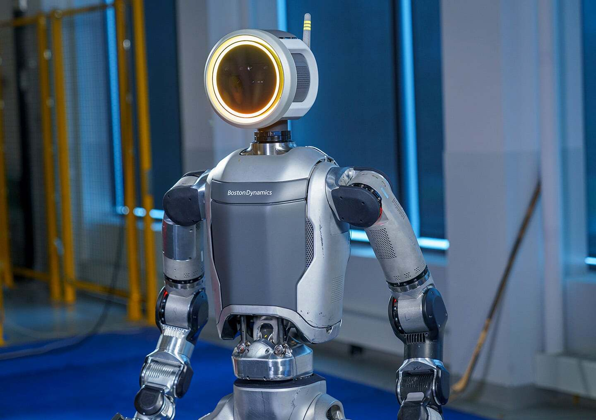

|
Atlas |
|---|
| PETMAN | Atlas | DRC | HD | Electric |
|---|
Electric
On Apr 17th, 2024, Boston Dynamics released a video announcing an all new, fully electric Atlas, just a day after announcing the retirement of its hydraulicly actuated HD Atlas.
Hardware
As you can see in the announcment video, Atlas now has something called hypermobility, meaning some joints are capable of rotating 360 degrees continuously. This new flexibility is enabled by slip rings placed at joints that are meant to be continuous, such as the head and torso. Apparently, many of Atlas' joints are continuous.
A new torso design allows Atlas to lean forward and side to side, adding flexibility to the abdomen. You can see this in action when Atlas squats down to pick things up that are low to the ground. The mechanical design of this joint is similar to Figure's 01 robot. The top and bottom half of the body are connected by a uninversal joint, then driven by two motors configured in a differntial pair. So when both motors contract, Atlas will lean forward. If the motors are activated in oposite directions, it will lean to the side where the motor is contracting.